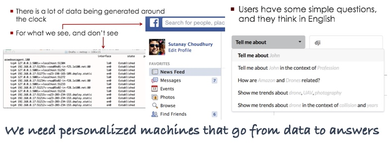

I am a member of PNNL’s computing research division. Here are some problems keeping us inspired.

Latest News
- Arun Sathanur and I are super excited to announce the initial release of a parallel generator for attributed graph databases. Please check it out - bug reports are highly appreciated!
- Our paper “Scalable Pattern Discovery from Dynamic Graphs” accepted in 2018 ACM Intl. Conf. on Web Search and Data Mining (WSDM)
- Our paper “Application Specific Graph Sampling for Frequent Subgraph Mining and Community Detection” accepted in IEEE BigData 2017
- Upcoming talk on “Networks and Graphs” at CoDA 2018 at Los Alamost National Laboratory.
- Our paper “When Labels Fall Short: Property Graph Simulation via Blending of Network Structure and Vertex Attributes” accepted in CIKM 2017.
- StreamWorks presented at BlackHat 2017! Our presentation is here.
Knowledge Graphs
The ability to construct domain specific knowledge graphs is critical to drive needs for question-answering or hypothesis generation. Despite their value, automated construction of knowledge graphs remains an expensive technical challenge that is beyond the reach for most enterprises and academic institutions. We propose an end-to-end framework for developing custom knowledge graph driven analytics for arbitrary application domains.
- Please check out NOUS, our open source knowledge graph framework.
- Our short paper in Data Engineering meets the Semantic Web, at ICDE 2017 shows how a generic knowledge graph system can answer complex application queries by reading the web
- Data quality is a major issue for automated knowledge graph construction. See our paper in 2016 SDM Workshop for estimating confidence in triples via Bayesian Personalized Ranking
- Discovering frequent patterns in the data is critical for sensemaking. See our paper in 2014 KDD Workshop for Learning frequent patterns from graph streams.
Streaming Algorithms
StreamWorks is a graph analytics system designed to detect patterns from massive data streams. This video shows a demonstration of StreamWorks’s capability to detect exfiltration events from a network traffic flow data stream. StreamWorks was selected by US Department of Homeland Security as the 2017 graduate of its Transition-To-Practice program.
- Check out our EDBT paper on detecting patterns from dynamic graph datastreams via subgraph isomorphism.
- If you are interested in exploring graph querying for cyber-security applications, see our SIGMOD workshop paper.
- The entire pipeline is described in our SIGMOD demonstrations paper.
- Not streaming, but this SIGMOD workshop paper explores the issues around querying cross-cloud databases.
Autonomous Systems Design
Resilience is the ability of a system to continue to function, even in a degraded manner, in the face of impediments that affect the proper operation of some of its components. For a cyber-network impediments can be randomly occurring failures of software services or hardware systems in an enterprise, or it may be unavailability of services or systems as the consequence of a cyber attack.
- We published this really cool paper in ICASSP 2016 showing how graph models and their metrics provide a simple, yet powerful tool to discover diverse types of network intrusions.
- Our paper at 2015 Automated Decision Making for Active Cyber Defense presenting algorithms to alter a network itself to adapt to an attack
- Our paper at 2015 ACM Conference on Computer and Communications Security showing a live demonstration of cyber resilience in Amazon Cloud
Sensor Networks
In my prior life I had implemented a sensor network protocol named PakBus. Developed by Campbell Scientific, PakBus is universally used by data collection devices. Our open-source version of a C++/Linux version of PakBus is available here.
Recent Publications
- Choudhury, S., Agarwal, K., Purohit, S., Zhang, B., Pirrung, M., Smith, W. and Thomas, M., 2017, April. Nous: Construction and querying of dynamic knowledge graphs. In Data Engineering (ICDE), 2017 IEEE 33rd International Conference on (pp. 1563-1565). IEEE.
- Zhang, B., Choudhury, S., Hasan, M.A., Ning, X., Agarwal, K., Purohit, S. and Cabrera, P.P., 2016. Trust from the past: Bayesian personalized ranking based link prediction in knowledge graphs.. In 2016 SIAM Data Mining Workshop on Mining Networks and Graphs
- Chen, P.Y., Choudhury, S. and Hero, A.O., 2016, March. Multi-centrality graph spectral decompositions and their application to cyber intrusion detection. In Acoustics, Speech and Signal Processing (ICASSP), 2016 IEEE International Conference on (pp. 4553-4557). IEEE.
- Choudhury, S., Rodriguez, L., Curtis, D., Oler, K., Nordquist, P., Chen, P.Y. and Ray, I., 2015, October. Action recommendation for cyber resilience. In Proceedings of the 2015 Workshop on Automated Decision Making for Active Cyber Defense (pp. 3-8). ACM.
- Choudhury S, L Holder, G Chin, K Agarwal, JT Feo. 2015. A Selectivity based approach to Continuous Pattern Detection in Streaming Graphs, In Proceedings of the 18th International Conference on Extending Database Technology. CODE
- Ray, A., Holder, L. and Choudhury, S., 2014, August. Frequent Subgraph Discovery in Large Attributed Streaming Graphs. In BigMine/Special Issue of Journal of Machine Learning Research (pp. 166-181).
- Lieberman, M.D., Choudhury, S., Hughes, M., Patrone, D., Hider Jr, R.T., Piatko, C.D., Chapman, M., Marple, J.P. and Silberberg, D., 2014, June. Parasol: An Architecture for Cross-Cloud Federated Graph Querying. In Proceedings of Workshop on Data analytics in the Cloud (pp. 1-4). ACM.
- Morari, A., Castellana, V.G., Villa, O., Tumeo, A., Weaver, J., Haglin, D., Choudhury, S. and Feo, J., 2014. Scaling semantic graph databases in size and performance. IEEE Micro, 34(4), pp.16-26.
- Joslyn, C., Choudhury, S., Haglin, D., Howe, B., Nickless, B. and Olsen, B., 2013, June. Massive scale cyber traffic analysis: a driver for graph database research. In First International Workshop on Graph Data Management Experiences and Systems (p. 3). ACM.